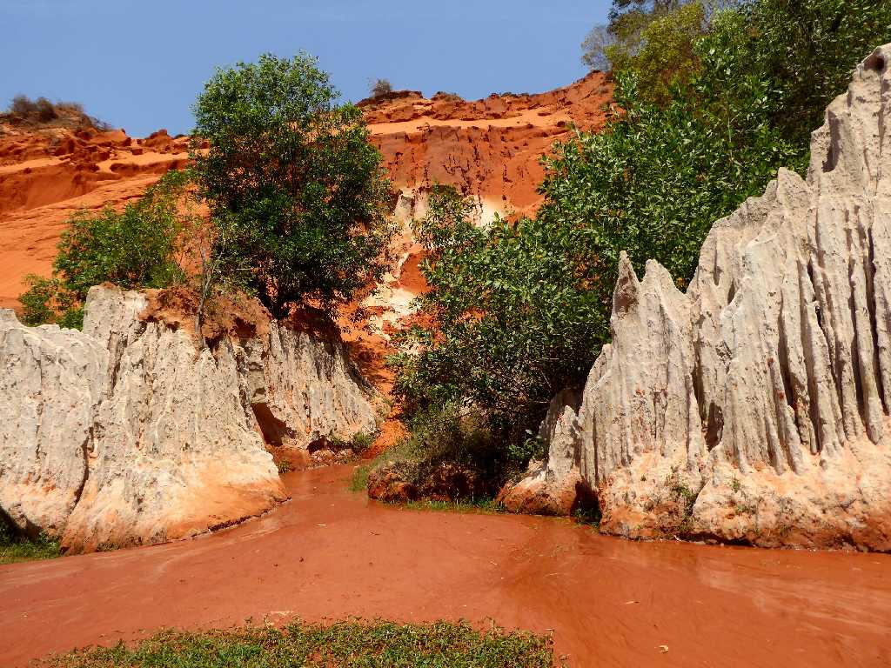
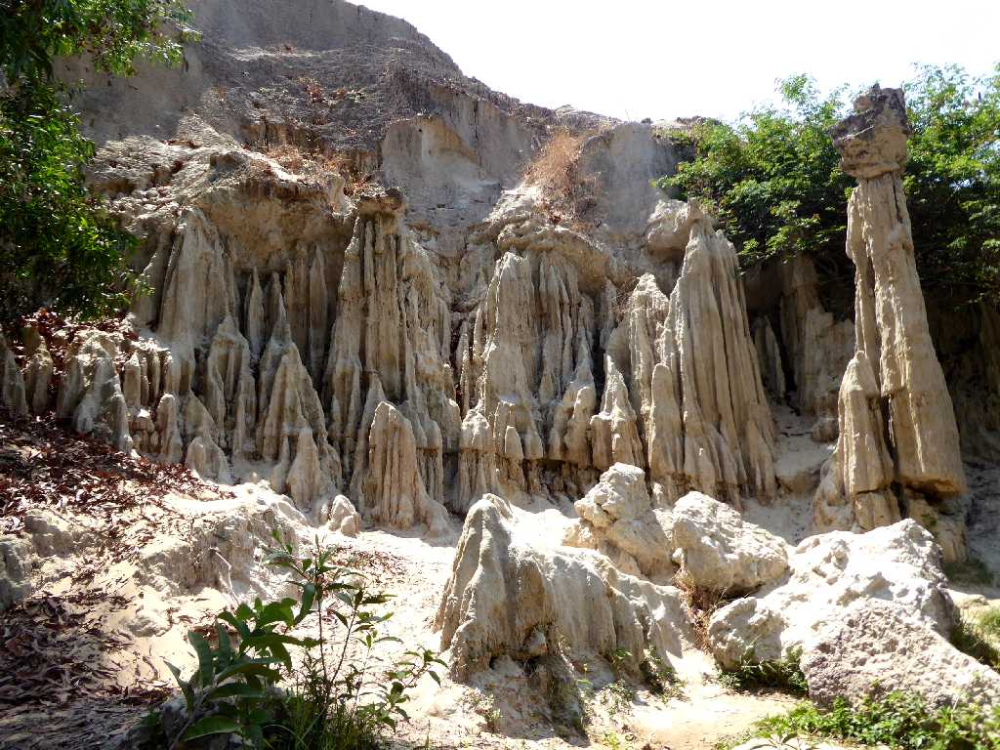
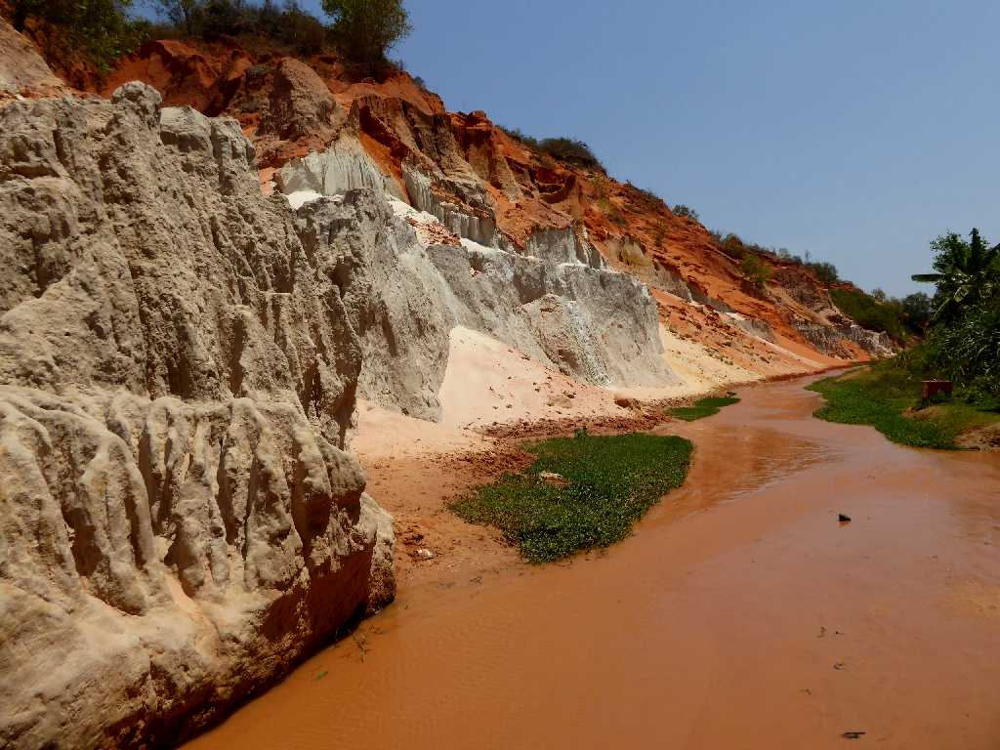
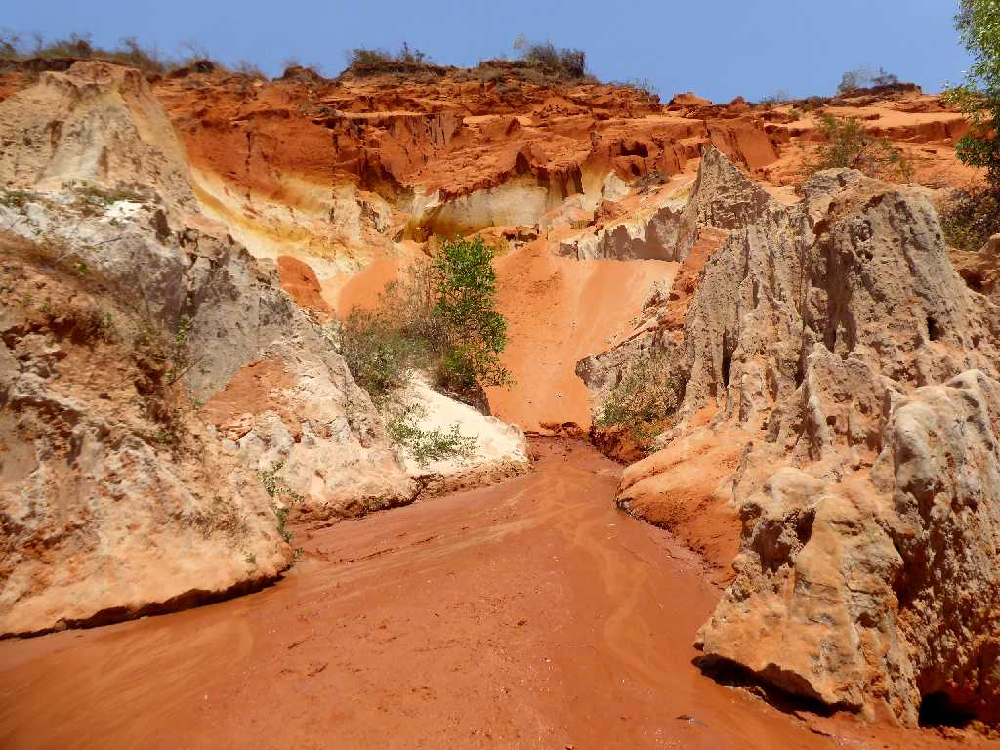
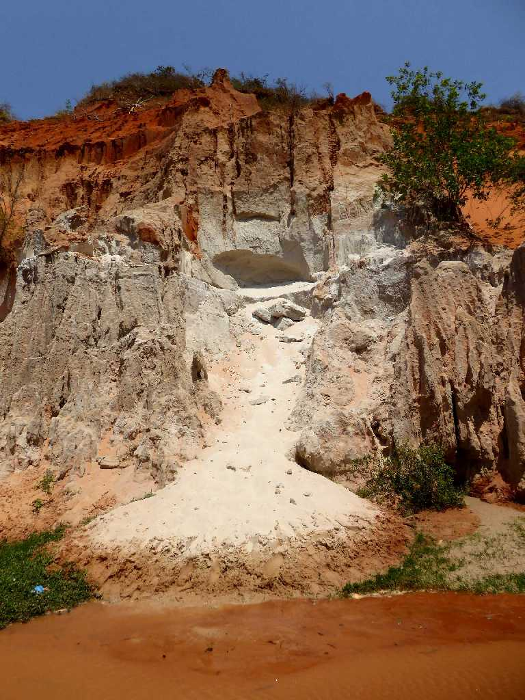
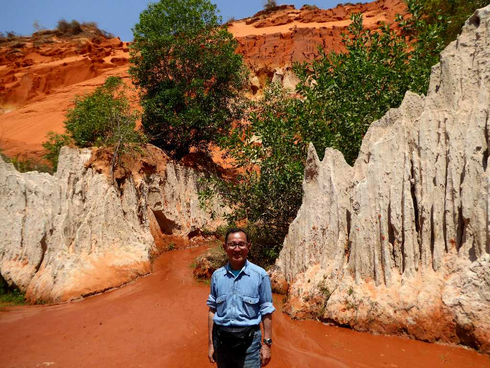

Suối Tiên (Fairy Stream) Mũi Né Phan Thiết
７人の妖精達が住んでいると云う伝説がある美しい妖精の渓流と讃えられるムイネーのスイティエン

Suối Tiên Mũi Né
ベトナムでは幻想的な小川や沼地には妖精が暮らしていると考えられている

Suối Tiên Mũi Né
渓流の柔らかい赤土のなかを素足で歩く心地よさが忘れられない
Suối Tiên Mũi Né
赤土と白岩と緑と済んだ水の流れの景観はまさに妖精達が住む渓流
Suối Tiên Mũi Né
この渓流を素足で歩く心地よさと美しい眺めは旅の疲れを癒してくれる
April 3 2018 Suối Tiên Mũi Né